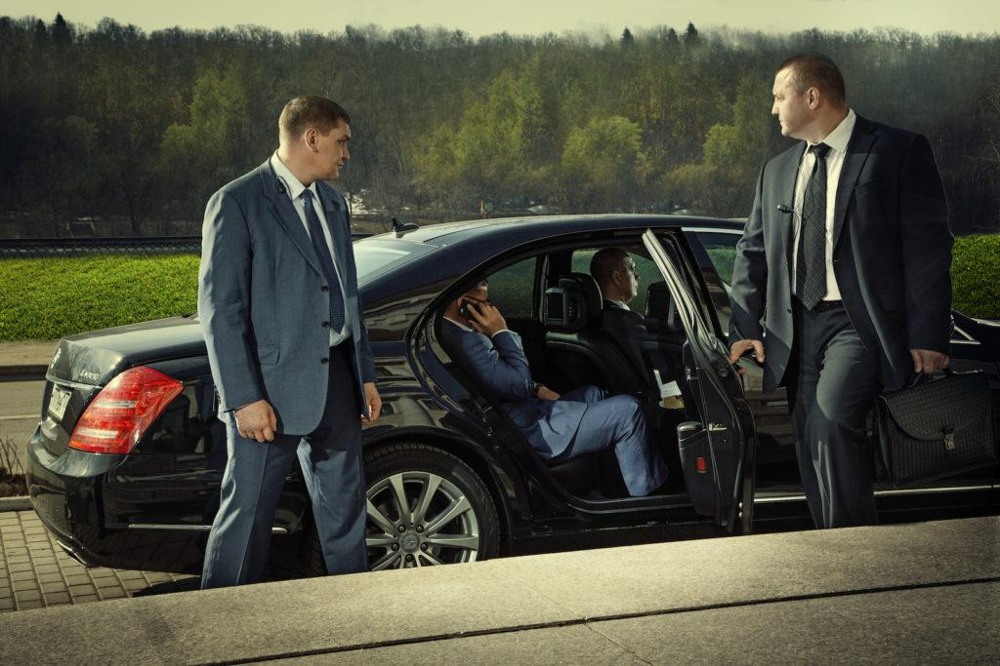
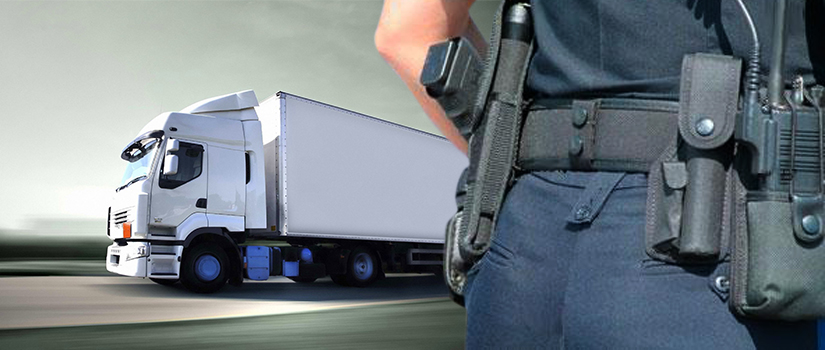

Наши услуги
Охрана юридического лица
- Защита зданий и активов: Наши вооруженные и невооруженные охранники ведут активный мониторинг с помощью систем наблюдения и регулярных обходов, з ащищая ваше имущество и оборудование. Их бдительность помогает предотвращать такие преступления, как кражи и вандализм, поддерживая безопасную обстановку.
- Контроль доступа: Мы тщательно контролируем точки входа и выхода, обеспечивая отслеживание всех гостей в целях повышения безопасности. Эта система способствует общему порядку и дисциплине на рабочем месте.
- Активный мониторинг: Обладая исключительными знаниями, позволяющими быстро распознавать подозрительные действия, наша команда эффективно решает проблемы, тем самым повышая безопасность каждого.
- Обслуживание клиентов: Более того, наши сотрудники службы безопасности оказывают профессиональную помощь, помогая посетителям безопасно и вежливо перемещаться по помещениям вашего бизнеса или мероприятия, что улучшает общую обстановку и качество обслуживания клиентов.
Стоимость невооружённой охраны:
- 30 минут - 4.00$ / один человек;
- 1 час - 8.00$ / один человек.
Стоимость лёгкой охраны:
- 30 минут - 5.20$ / один человек;
- 1 час - 10.40$ / один человек.
Стоимость тяжёлой охраны:
- 30 минут - 7.50$ / один человек;
- 1 час - 15.00$ / один человек.

Охрана физического лица
- Охранники личной охраны:Наши профессиональные охранники предлагают частные охранные услуги для лиц, нуждающихся в личной защите, уделяя особое внимание решениям безопасности с упреждающим предотвращением угроз.
- Охранники для руководителей:Наши охранники, специализирующиеся на охране руководителей, обеспечат вашу безопасность как во время путешествий, так и на рабочем месте. Они хорошо разбираются в оценке рисков и стратегиях реагирования, чтобы обеспечить безопасную обстановку вокруг вас.
- Водители транспортных средств и охраны: Наши обученные водители обеспечивают безопасную транспортировку, сочетая опытное вождение с мерами личной защиты для беспрепятственного и безопасного проезда. Они хорошо разбираются в технике уклонения и защиты при вождении.
- Доступ и контроль толпы: Наши охранники умеют управлять точками доступа и большими скоплениями людей для обеспечения безопасной обстановки во время публичных выступлений или частных мероприятий. Их стратегическое позиционирование и отличные навыки наблюдения помогают предотвращать несанкционированный доступ и поддерживать порядок.
- Охранное наблюдение: Наши команды используют стратегическое планирование, чтобы опережать потенциальные риски, обеспечивая всесторонний охват и возможности быстрого реагирования.
- Управление чрезвычайными ситуациями и угрозами:Наша команда реагирования оснащена для оперативного управления кризисными ситуациями, устранения угроз для вашей безопасности. Они тесно координируют свои действия с местными властями для быстрого разрешения любых инцидентов, связанных с безопасностью, поддержания мира и порядка.
Стоимость личной охраны:
- 30 минут - $ / один человек;
- 1 час - $ / один человек.

[В разработке]
Сопровождение грузов
Описание услуги по сопровождению грузов.
[В разработке]
Пультовая охрана
Описание услуги по пультовой охране.